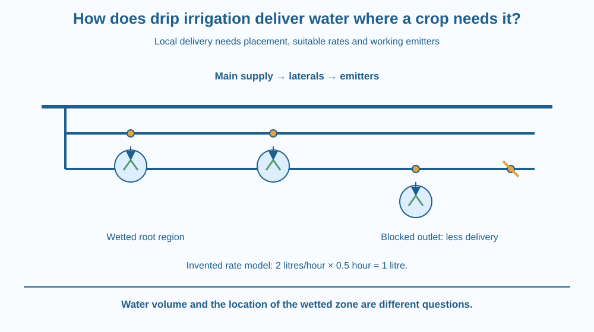

Explain how a drip-irrigation system delivers water near selected plants. Identify the supply, laterals and emitters. Distinguish the amount delivered from the pattern of wetting, and predict why a blockage or pressure difference can make apparently identical plants receive unequal water.
In one field, water covers a large part of the surface. In another, thin tubes run beside the crop rows and release water at selected points. The second field may look dry between plants even while the soil near each plant receives water.
Does a dry-looking path prove that the crop has not been irrigated? No. The useful question is where the water enters and whether the wetting pattern reaches the active root region.
Drip irrigation changes the location and rate of delivery rather than simply making water disappear into an invisible system.
Drip irrigation supplies water through a network of pipes and small outlets called emitters. A main supply feeds smaller lines, often called laterals, positioned near rows or individual plants. Each emitter regulates a relatively small flow at its location.
Delivering water locally can reduce the area wetted unnecessarily. Less water may be applied to paths or spaces without crop roots, depending on the layout. It can also reduce some losses associated with spreading water over a broad exposed surface.
These are potential advantages, not a guarantee of one fixed percentage saving. Soil, crop spacing, climate, scheduling, equipment condition and the comparison method all matter. A system can still waste water if it runs too long or is badly positioned.
The wetted zone around an emitter develops as water moves into and through the soil. Its width and depth depend on texture, structure, input rate and duration. Water does not necessarily form an identical spherical bubble around every outlet.
A useful layout matches emitter placement to the plant's root distribution and growth stage. An outlet too far from active roots may wet a place the plant cannot use effectively. As the plant grows, the relevant root region and water demand can change.
Delivery also depends on the hydraulic conditions in the pipe network. Differences in elevation, pressure and line length can change outlet flow. Some systems use pressure-compensating emitters, but no device should be assumed perfect under every operating condition.
Clogging is another important cause of uneven delivery. Suspended particles or deposits can restrict narrow emitter passages. A properly chosen filter and maintenance procedure help protect the system. This filtration stage supports the irrigation network; the lesson does not repeat mesh separation as its main mechanism.
A schedule determines how much water is supplied over time. Flow rate multiplied by operating time gives volume in a simple steady-flow model. If an emitter delivers an invented 2 litres per hour for half an hour, the model volume is 1 litre. Those numbers illustrate arithmetic, not a recommended schedule for every crop.
Draw a branching supply network ending in several small outlets. Put a plant beside each outlet and shade only the soil regions that receive water. Leave some path areas unshaded.
Then block one outlet in the drawing. The network can still look intact while that plant receives little or no water. This shows why inspecting a pipe's presence is not enough to verify delivery.
Finally write rate and time beside each outlet. The combination determines how much is supplied, while outlet position and soil properties influence where it goes. Keeping volume and wetting pattern separate makes the model more useful for diagnosing uneven growth.
The SVG shows a supply pipe, two laterals and several emitters beside plants. Blue regions indicate possible wetted root zones rather than a continuous flooded surface. One blocked outlet is shown as a comparison.
A small rate-times-time panel uses explicitly invented values to connect operating time with delivered volume. Separate labels identify delivery location and quantity. The roots are schematic and not a claim that every crop has the same root form.
The drawing focuses on controlled local application. It does not show deep groundwater recharge, a full irrigation engineering design or the correct watering schedule for a particular farm.

Drip systems are used for various crops and gardens in India. Row spacing and plant placement make the layout especially important. An orchard tree and a closely spaced vegetable crop need not use the same emitter pattern.
A school garden can use the idea of placing water near roots without claiming that every small homemade dripper reproduces a farm system. Real equipment must handle supply conditions, filtration and maintenance reliably.
Farm water management also includes soil condition, weather and crop needs. Installing tubes alone does not establish good irrigation. The system's value comes from matching delivery and scheduling to the actual growing conditions.
Use paper, a pencil and a ruler. No tubes, sharp tools or electrical pumps are needed.
Add an example rate and duration only if you label them invented. Do not treat the calculation as watering advice. The design exercise tests placement and delivery logic rather than measuring soil moisture or proving a water-saving percentage.
Two emitters release equal volumes, but one is near the plant's active roots and the other is far away. Why can the plants benefit differently?
Now imagine an emitter supplying water faster than the surface can absorb it. Describe a possible runoff or ponding problem. A locally placed outlet is useful only when its rate, position and operating time suit the soil and crop.
Which part releases water at a selected location in a drip system?
Answer: A — Emitters provide controlled outlets from the irrigation network.
Why can local delivery reduce unnecessary watering?
Answer: B — Suitable placement supplies root regions while leaving some paths unwetted.
An invented emitter supplies 2 litres per hour for half an hour. What volume is delivered?
Answer: C — Volume equals rate multiplied by time: 2 times one-half gives 1 litre.
Create an irrigation layout for a small rectangular vegetable bed. Include the supply, laterals, outlet positions and a simple inspection plan. Name two reasons one plant might receive less water than another even when both have a tube nearby.
Your proposal must distinguish reducing unnecessary wetted area from guaranteeing a particular total saving. State what you would need to measure before making a numerical comparison with another watering method.
A patch of dry soil between rows can be compatible with effective irrigation. The important target is not making the entire surface look equally wet. It is delivering an appropriate amount to the region the crop can use, while monitoring how the water actually spreads.
Drip irrigation controls where and how quickly water is delivered; useful performance depends on root-zone placement, scheduling and working emitters together.